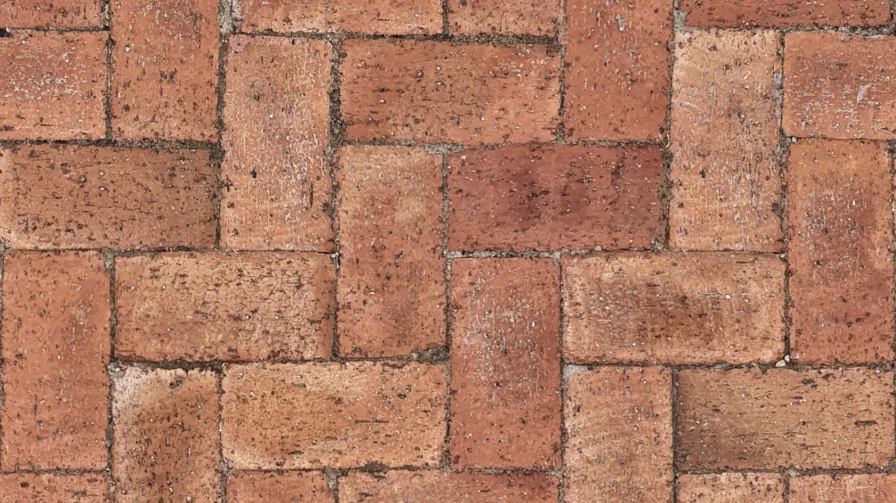
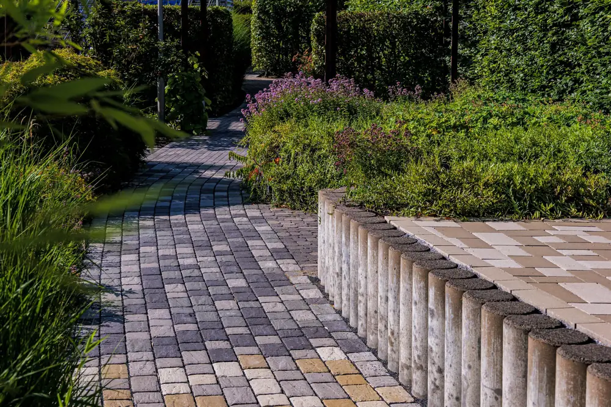
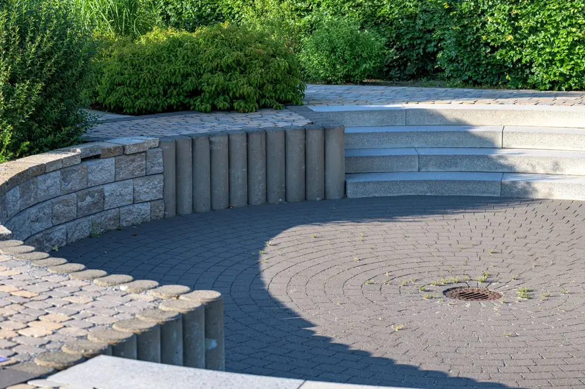
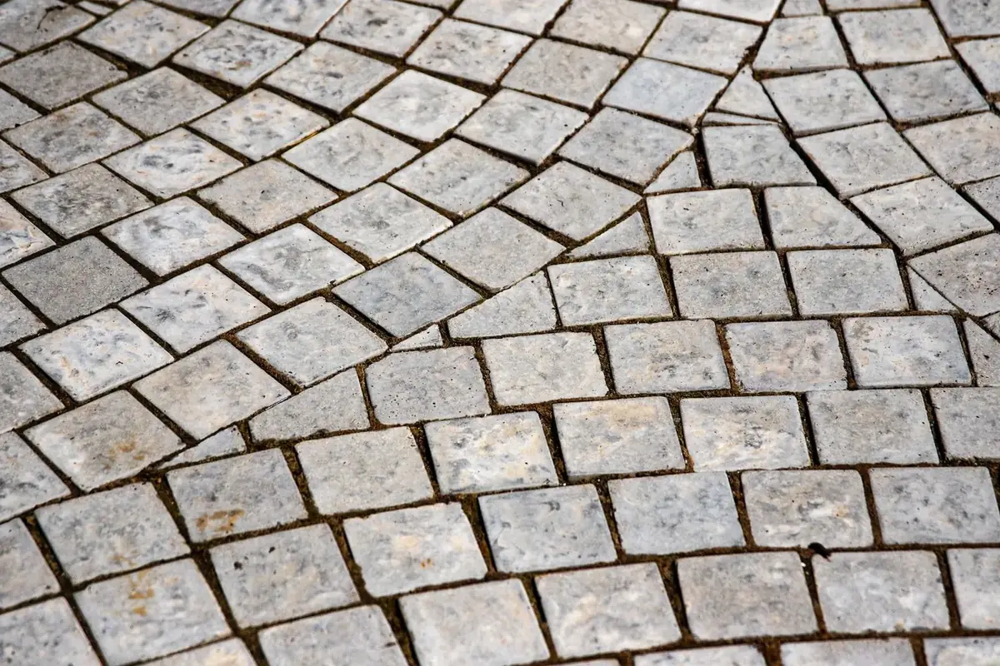

Pflasterarbeiten in Wiesbaden, die auch am Hang halten.
Wir pflastern Einfahrten, Wege und Stellplätze. Bei Pflasterarbeiten in Wiesbaden kommt oft der Hang dazu: Deshalb legen wir zuerst fest, wohin das Regenwasser läuft, und bauen den Unterbau so tief, wie Ihr Boden es braucht.
Was Pflasterarbeiten in Wiesbaden kosten.
Richtwerte inkl. 19 % MwSt., Material, Unterbau und Verlegung. Befahrbare Flächen brauchen mehr Unterbau und kosten etwa 15 % mehr. Woraus sich der Preis zusammensetzt, zeigt unser Ratgeber zu Pflasterkosten.
- Betonsteinpflaster60 bis 95 € pro m²
- Pflasterklinker80 bis 125 € pro m²
- Granitpflaster110 bis 170 € pro m²
- Altes Pflaster neu verlegenauf Anfrage, oft günstiger als neu
Pflastern am Taunushang.
Viele Wiesbadener Grundstücke liegen am Hang. Das hat Folgen dafür, wie eine Einfahrt gebaut werden muss.
Gefälle und Querrinne am Hang
In Sonnenberg, Rambach oder Dotzheim läuft Regenwasser oft direkt auf die Garage zu. Eine Querrinne vor dem Tor und das richtige Gefälle der Fläche halten das Wasser draußen.
Gebühr nach versiegelter Fläche
In Wiesbaden hängt die Niederschlagswassergebühr von der gebührenrelevanten Fläche ab. Pflaster mit offenen Fugen oder Versickerung auf dem Grundstück kann sich deshalb lohnen. Außerdem verlangt die Hessische Bauordnung in § 8, dass nicht überbaute Flächen wasserdurchlässig bleiben, soweit sie nicht als Zufahrt oder Ähnliches gebraucht werden. Für den Gartenweg heißt das: lieber offene Fugen.
Unterbau statt Nacharbeit
Wenn eine Einfahrt absackt, war fast immer der Unterbau zu dünn oder schlecht verdichtet. Für befahrene Flächen rechnen wir je nach Boden mit 30 bis 50 cm Frostschutz- und Tragschicht.
Fotos verlegter Flächen.
Im Pflaster-Wähler auf der Startseite wechseln Sie Stein und Verband und sehen dazu den Richtpreis für Ihre Fläche. Zum Pflaster-Wähler



Was wir oft pflastern.
Vom Garagenvorplatz am Hang bis zur Hofeinfahrt in Klinker.
- Wiesbaden-Rambach
Querrinne vor der Garage
Abgesacktes Pflaster vor dem Tor aufgenommen, Rinne eingebaut, die Fläche mit Gefälle neu verlegt.
- Wiesbaden-Schierstein
Klinker wiederverwendet
Alten Klinker aufgenommen, gereinigt und auf neuem Unterbau im Fischgrätverband verlegt.
- Wiesbaden-Nordenstadt
Stellplätze am Neubau
Zwei Stellplätze in Rasenfugenpflaster, Weg zur Haustür in Betonstein.
- Wiesbaden-Bierstadt
Hofeinfahrt in Klinker
Klinker im Fischgrätverband, Randsteine in Granit.
Vom Aufmaß bis zum Einfegen.
Beim Pflaster entscheidet der Unterbau. Deshalb sehen wir uns jede Fläche an, bevor wir ein verbindliches Angebot schreiben.
- Fläche beschreiben
Größe, befahren oder nicht, gewünschter Stein. Ein Foto der jetzigen Fläche hilft.
- Aufmaß und Gefälle
Vor Ort messen wir die Höhen, prüfen den Boden und legen fest, wohin das Wasser läuft.
- Unterbau
Aushub, Frostschutz- und Tragschicht in Lagen verdichtet, darauf das Splittbett.
- Verlegen und Einfegen
Steine verlegen, Fugen einfegen, abrütteln. Danach ist die Fläche sofort nutzbar.
Was wir zu Einfahrten oft gefragt werden.
Was kostet eine gepflasterte Einfahrt in Wiesbaden?
Für eine befahrbare Einfahrt in Betonstein rechnen Sie bei uns mit etwa 70 bis 110 Euro pro Quadratmeter, in Granit mit 125 bis 195 Euro. Darin sind der tiefere Unterbau, das Material und die Verlegung enthalten. Ein Gartenweg liegt etwa 15 Prozent darunter. Das Aufnehmen und Entsorgen von altem Pflaster weisen wir getrennt aus. Den verbindlichen Preis bekommen Sie nach dem Vor-Ort-Termin.
Lohnt sich wasserdurchlässiges Pflaster in Wiesbaden?
Oft ja. Die Niederschlagswassergebühr richtet sich nach der gebührenrelevanten Fläche, und durchlässige Beläge oder Versickerung auf dem Grundstück können diese verringern. Wie viel das bei Ihnen ausmacht, zeigt der Gebührenrechner der ELW (Entsorgungsbetriebe der Landeshauptstadt Wiesbaden) für Privathaushalte, auf den auch die Stadt Wiesbaden verweist. Wir planen Gefälle und Fugen so, dass das Wasser auf Ihrem Grundstück versickern kann, wo der Boden es zulässt.
Wie tief muss der Unterbau einer Einfahrt sein?
Für eine befahrene Einfahrt rechnen wir je nach Boden mit 30 bis 50 Zentimetern Frostschutz- und Tragschicht plus 3 bis 5 Zentimetern Splittbett. Ein Gartenweg kommt mit deutlich weniger aus. Den Aufbau legen wir nach dem Boden vor Ort fest.
Kann man alte Pflastersteine wiederverwenden?
Wenn die Steine heil sind, ja. Wir nehmen sie auf, bauen den Unterbau neu und verlegen dieselben Steine wieder. Das spart Material und sieht danach aus wie vorher, nur wieder eben. Ob die Steine noch taugen, sehen wir beim Vor-Ort-Termin, denn Kantenabbrüche und Risse fallen sofort auf.
Wie lange dauert der Bau einer Einfahrt?
Eine typische Einfahrt mit 40 bis 80 Quadratmetern dauert meist ein bis zwei Wochen, je nach Aushub und Wetter. Während der Arbeiten planen wir mit Ihnen, wo das Auto in der Zeit steht. Nach dem Abrütteln und Einfegen der Fugen ist das Pflaster sofort begehbar und befahrbar.
Weitere Leistungen und Orte
Welche Fläche soll gepflastert werden?
Schreiben Sie uns, wie groß die Fläche ist, ob sie befahren wird und welcher Stein Ihnen gefällt. Stein und Verband können Sie vorher im Pflaster-Wähler auf der Startseite mit echten Fotos vergleichen.